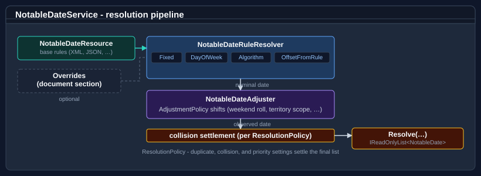

Bodu.Globalization.Calendar guides
Recipe-style walk-throughs for Bodu.Globalization.Calendar, organized by namespace.
Part of the Globalization & Calendars topic.
If you are new to the library, start with the introduction, the Core concepts glossary, and the getting-started page. For the auto-generated API reference, see the Bodu.Globalization.Calendar namespace page.
Looking for the data? The Notable-date catalogue lists what notable dates the calendar resources include and how regions and territories differ - generated from the XML, organized by theme and by region, with a cross-region comparison matrix.
How the library works

A rule document is authored on the notable-date schema and loaded into an immutable NotableDateResource. A NotableDateService is built over that resource; for each requested date, range, or year it resolves every applicable rule via the rule's strategy, runs the referenced adjustment policies, settles same-day collisions, and returns the resolved NotableDate set.
Namespace map
| Namespace | What lives here | Guides |
|---|---|---|
Bodu.Globalization.Calendar |
Service, resource/definition/rule model, loader, adjustment policies, validation - the resolution pipeline. | Using NotableDateService · Authoring notable date rules · Territories and regional composition · Async resolution, localized names, and typed catalogues |
Bodu.Globalization.Calendar.Algorithms |
The date-calculation strategies, the <Algorithm key="…"> keys and bundled calculators, and the INotableDateAlgorithm / NotableDateAlgorithmRegistry custom-algorithm contract. |
Date calculation algorithms |
Bodu.Globalization.Calendar.RangeResolution |
Duplicate / collision / priority / observed-date policies on ResolutionPolicy. |
The resolution pipeline · Identity, priority, observed dates |
Bodu.Globalization.Calendar.Plugins |
Trust-gated loading of external algorithm assemblies - NotableDatePluginLoader, IPluginTrustPolicy, and the deny-by-default trust policies. |
Building and extending the service - Plugin system |
Bodu.Extensions |
Working-day arithmetic over DateOnly, DateTime, and DateTimeOffset - IsWorkingDay, NextWorkingDay, AddWorkingDays, … |
Working-day arithmetic |
Bodu.Globalization.Calendar (data packs) |
Region-specific public-holiday resources shipped in the Bodu.Globalization.Calendar.Americas, .AsiaPacific, .Europe, .MiddleEast, and .Africa companion packages - each a <Region>CalendarData factory in the runtime's namespace. |
Calendar data packs |
Bodu.Globalization.Calendar.Caching |
The read-through CachingNotableDateService decorator, the INotableDateCache contract, and the in-memory / TOML / JSON backends (SQLite and IDistributedCache backends in the .Sqlite / .Distributed add-ons; DI registration in Bodu.Globalization.Calendar). |
Caching notable dates · Cache backends and options · Writing a cache backend |
Bodu.Globalization.Calendar (DI) |
IServiceCollection.AddNotableDateService(...) / AddReloadableNotableDateService(...) from the DI companion package. |
Calendar dependency injection |
Bodu.Globalization.Calendar.Builder |
Fluent C# authoring of notable-date documents - NotableDateDocumentBuilder, XML / JSON serialization, and load/save. |
Authoring with the notable-date builder |
Guides
Bodu.Globalization.Calendar - Service
Using NotableDateService
The main entry point - loading a resource, resolving notable dates for a date, range, or year, filtering by territory and category, the reloadable runtime-swap workflow, and working-day arithmetic over DateOnly / DateTime.
Authoring notable date rules
How to author your own rule documents in XML / JSON - definitions, rules, strategies, importing the bundled common catalogues with <Use> directives, and layering ID-targeted <Overrides>.
Authoring with the notable-date builder
The fluent C# peer of XML / JSON authoring - NotableDateDocumentBuilder assembles definitions, rules, adjustment policies, imports, and overrides, then serializes to XML / JSON, saves to a file, or builds a NotableDateResource.
Bodu.Globalization.Calendar - Reference
Notable-date rule strategies
The full catalogue of occurrence sources - every single-date strategy (fixed, positional, weekday, reference-based, business-day, algorithm), the recurrence sources, and fixed vs. calculated durations - with a choosing guide and a common-scenarios cookbook.
NotableDateRule and adjustment-policy reference
Authoritative element-by-element reference for the rule document - every strategy element, the applicability window, and the reusable <AdjustmentPolicy> shape - with worked examples.
Territories and regional composition
How TerritoryCode works - ISO 3166 country / subdivision codes, parsing, containment semantics (AU ⊇ AU-NSW), authoring rules with territory scope, and composing national and regional rules.
Observance adjustment rules
Nominal date vs. observed date; the full trigger and action catalogues - every AdjustmentTrigger and AdjustmentAction value, emission modes, real-world weekend-substitution patterns, and custom trigger / action handlers.
The resolution pipeline
Walkthrough of the load and query stages - parse, import resolution, override application, validation; then strategy resolution, adjustment evaluation, collision settlement, and emission - with a concrete worked trace.
Rule identity, priority, and observed-date resolution
How occurrences are identified, how priority arbitrates same-day collisions, how ResolutionPolicy settles duplicates and collisions, and how emission modes and the observed-date range policy shape what a query returns.
Calendar validation diagnostics
The stable BODU-CAL-* code catalogue and severities, and the collect-mode lint surface - TryLoad, Validate, TryBuild - for build tasks and editor integrations.
Binary rule packs
Compiling a validated document to a sealed .bcal pack - the trim- and AOT-friendly load path - with the bodu-calendar tool and the Bodu.Globalization.Calendar.Build MSBuild integration.
The bodu-calendar CLI
Every verb and option of the bodu-calendar tool - lint, compile, info, -o, --resolver-dir - the exit codes, the diagnostic line format with real output, CI usage, and loading a compiled pack.
Compiling packs in MSBuild
The Bodu.Globalization.Calendar.Build package - NotableDatePack items, the CompileNotableDatePack task parameters, the override properties, incremental build behaviour, and consuming the compiled pack at run time.
Bodu.Globalization.Calendar - Patterns
Holiday patterns and examples
End-to-end examples for fixed-date holidays, weekend substitution policies (AU/NZ, UK, US), floating weekday-of-month holidays, Easter clusters, lunar and algorithmic dates, multi-day events, and subdivision-level variants.
Working-day arithmetic
The Bodu.Extensions surface over DateOnly / DateTime / DateTimeOffset - IsWorkingDay, AddWorkingDays, WorkingDaysBetween, NextWorkingDay, snap operations, fiscal-period helpers, and the WeekPattern working week.
Building and extending the service
Composing the service with collaborators - NotableDateAlgorithmRegistry, adjustment handler / trigger registries, INotableDateCollisionResolver, INotableDateNameLocalizer, INotableDateProvider, the reloadable provider, and the trust-gated plugin system.
Calendar dependency injection
The Bodu.Globalization.Calendar.DependencyInjection companion package - the services.AddNotableDateService(...) overloads (resource, factory, options, keyed) and AddReloadableNotableDateService(...) for the runtime-swap workflow.
Calendar plugin trust
What the deny-by-default plugin gate validates, what each bundled trust policy (strong-name, file-hash, composite, delegating) does and does not check, and how a rejected or failing plugin surfaces.
Caching notable dates
The Bodu.Globalization.Calendar.Caching read-through decorator - per-territory, per-civil-year cache entries, the in-memory / TOML / JSON / SQLite / distributed backends, warm-up, observability, and the DI registration.
Cache backends and options
Every option on the decorator, the file, SQLite, and distributed backends, and the warm-up; the on-disk TOML / JSON schema with a real file; the SQLite table; the distributed key format; NotableDateCacheWriteStatus; and the cacheFactory composition rule.
Writing a cache backend
The INotableDateCache contract and the ordering / merge invariants a backend must honour, deriving NotableDateCacheBase<TOptions> versus implementing the interface directly, a complete in-memory backend, registration, and testing.
Async resolution, localized names, and typed catalogues
ResolveAsync streaming a range year by year with cancellation, NotableDateNameLocalizer and how names fall back through the culture chain, CommonNotableDateCatalog with CommonNotableDateResources.Load, and the rule duration and RuleApplicability model.
Builder round-trip guarantees
Exactly what NotableDateDocumentBuilder XML / JSON serialization, parsing, and resource materialization guarantee - and what they do not.
Bodu.Globalization.Calendar.Algorithms
Date calculation algorithms
The resolution strategy kinds (the full catalogue lives in the strategy reference), the built-in <Algorithm key="…"> keys - Easter (Gregorian / Orthodox), equinoxes, Qingming, Vesak, Losar, Matariki, Hindu festivals - and a custom-algorithm walk-through.
Working with non-Gregorian calendars
<Fixed> dates authored in the Hijri, Umm al-Qura, Hebrew, Persian, or Chinese lunisolar calendar, how they project onto the Gregorian year, and the double-occurrence and leap-month cases.
Bodu.Globalization.Calendar.<Region> - Data packs
Calendar data packs
The official Bodu.Globalization.Calendar.<Region> companion packages - Americas, Asia-Pacific, Europe, Middle East, and Africa - their CreateService / LoadResource factories, and territory coverage.
Notable-date catalogue
What notable dates the shipped resources include and how regions and territories differ - generated from the XML, organized by theme and by region, with a cross-region comparison matrix.
Where to go next
- Runnable samples - offline sample projects under
samples/Globalization.Calendar/composing the data packs, working-day arithmetic, the builder, DI, custom algorithms, caching, and validation linting end to end. - Bodu.Globalization.Calendar introduction - mental model, headline types, scenarios.
- Core concepts - vocabulary used throughout these guides.
- Bodu.Globalization.Calendar getting started - install and minimal samples.
- Bodu.Globalization.Calendar API reference - full namespace overview.
- Globalization & Calendars guides - the topic map: how these guides, the companion packages, the data packs, and the Recurrence guides relate. The complete guide list for the calendar family is this page.